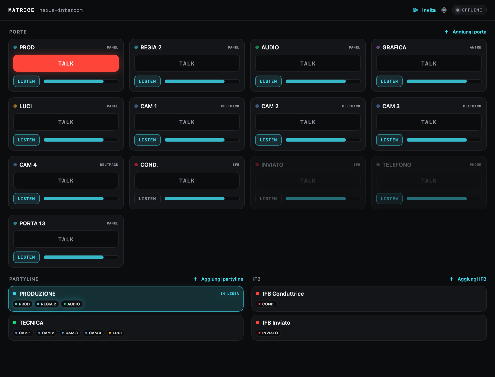
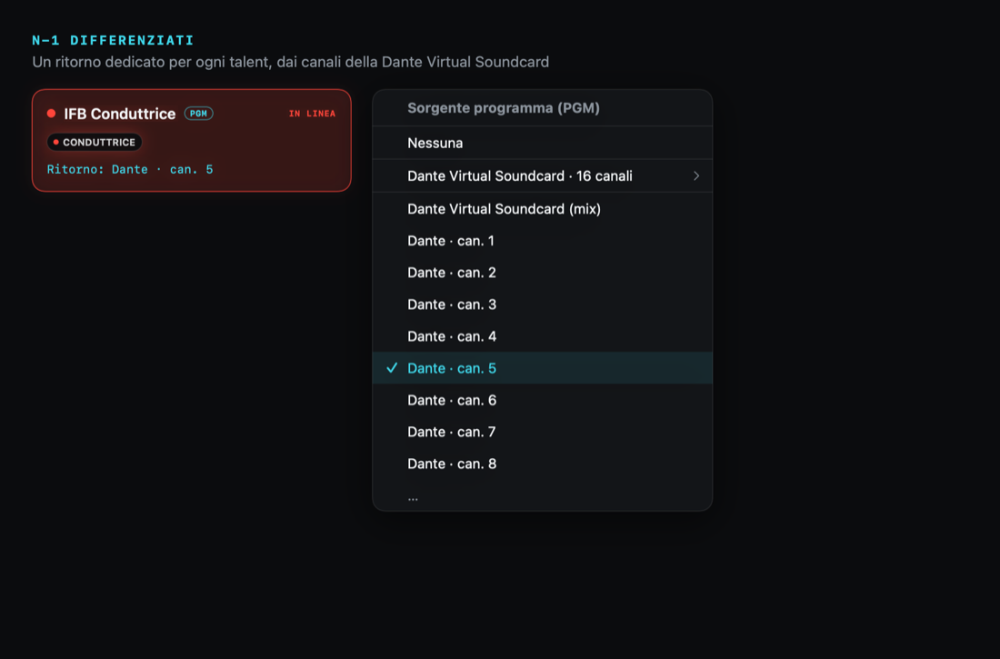
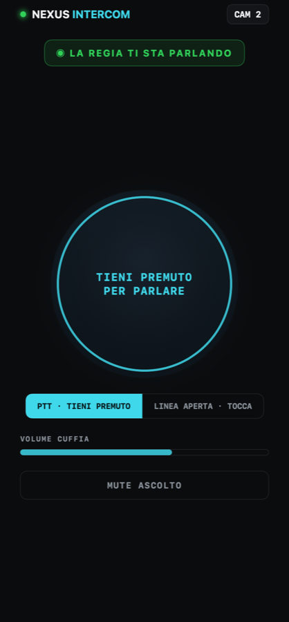
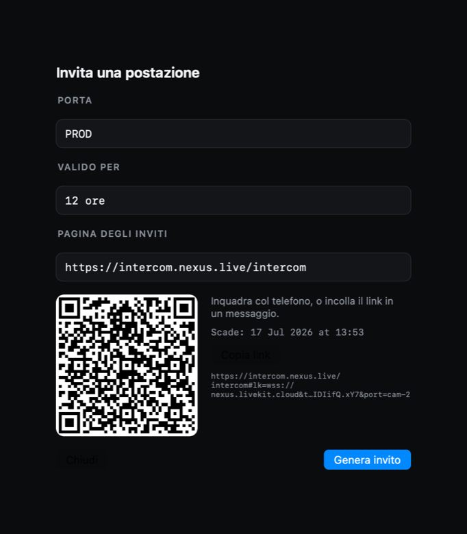
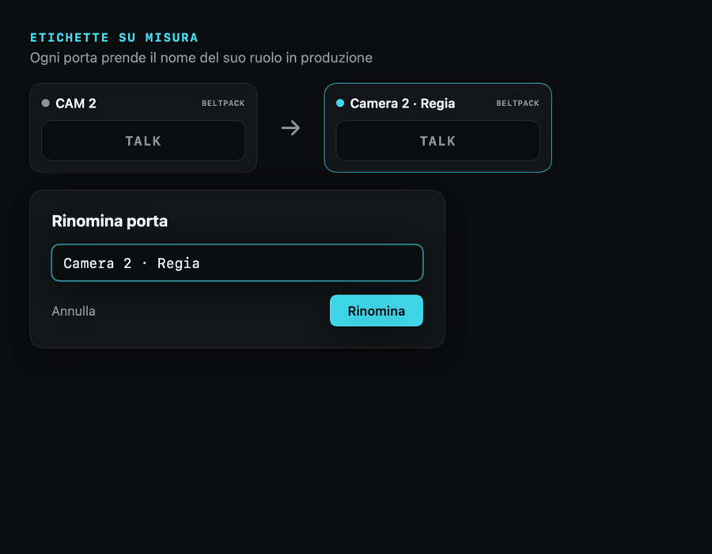

TALK, LISTEN, partyline, IFB e fino a 16 N-1 differenziati. La matrice intercom di una regia broadcast — su iPhone, iPad e Mac. La regia invita una postazione con un link: entra in tre secondi, senza installare nulla.

Un intercom di regia serio è una matrice di crosspoint: chi parla con chi, a che volume, chi lo sente. NEXUS la trasporta intera sui dispositivi che hai già — la logica gira nel cloud, il segnale è audio reale a bassa latenza.
Ogni talent ha bisogno del suo ritorno: il program meno la propria voce. NEXUS pesca ogni N-1 da un canale distinto di qualunque scheda audio con ingressi, collegata al dispositivo — per esempio una Dante Virtual Soundcard — fino a sedici circuiti indipendenti. Si assegna con un tocco.
Il menu della sorgente PGM espone i canali della scheda uno per uno. Assegni un canale alla conduttrice, un altro all'inviato, un altro ancora alla seconda voce — e ognuno sente esattamente il mix che gli serve, senza il rientro della propria voce.

Niente account, niente installazioni per gli ospiti. La regia genera un invito per una postazione — un QR o un link con scadenza — e chi lo riceve apre l'intercom sul telefono. Beltpack in tasca, con push-to-talk, volume in cuffia e mute d'ascolto.


Ogni invito è firmato e a tempo: vale per una postazione sola e scade quando decidi tu. Sul telefono, l'ospite trova un push-to-talk grande come deve essere in produzione, con linea aperta o momentaneo, volume in cuffia e un mute d'ascolto per isolarsi al volo.
Rinomini le etichette al volo, monti partyline e circuiti IFB, vedi a colpo d'occhio chi sta parlando. Al primo avvio, un setup guidato collega la stanza intercom in cloud — una volta, e la configurazione si propaga a tutte le postazioni.
«CAM 2» diventa «Camera 2 · Regia»; una partyline raccoglie il reparto tecnico, un'altra la produzione; un IFB porta il program nell'orecchio del talent. Il tocco professionale sta nei dettagli: TALK momentaneo o a linea aperta, LISTEN per postazione, livelli per crosspoint.

Push-to-talk in tasca per operatori, inviati e conduttori. Entra da un link, funziona anche a schermo bloccato.
La matrice completa a portata di dito, per regia mobile e postazioni tecniche. Talk, listen, livelli e gruppi.
La regia possiede la matrice e i circuiti N-1 dalla scheda Dante. È il cuore che invita e instrada tutte le postazioni.
La matrice resta in regia. Le voci vanno dove serve.